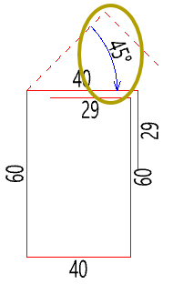
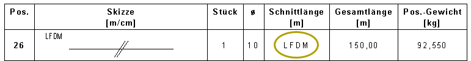

Übersicht der Neuerungen in vorherigen ISBCAD Versionen. |
|
Hinweis: |
|
Die Neuerungen in vorherigen Versionen, die auf dieser Seite beschrieben sind, werden nicht aktualisiert. Gegebenenfalls können Funktionen im aktuellen ISBCAD 2026 entfernt, erweitert oder geändert worden sein. |

 Version 2025
Version 2025
Favoriten-Leiste für häufig benötigte Funktionen Stellen Sie Ihre am häufigsten genutzten Funktionen in einer benutzerdefinierten Leiste zusammen. Fügen Sie der Leiste Verknüpfungen verschiedener Funktionen hinzu und passen Sie die Darstellung nach Ihren Wünschen an ñ sei es als Text, Icon oder eine Kombination aus beidem. Die Verknüpfungen können innerhalb der Leiste flexibel verschoben werden, sodass auch Gruppierungen bestimmter Funktionen möglich sind. Platzieren Sie die Favoriten-Leiste für optimale Mauswege nach Belieben am rechten oder linken Rand der Zeichenfläche. Bei der Favoriten-Leiste handelt es sich um ein Tabellenelement, das aus mehreren Spalten und Zeilen bestehen kann. Sie haben demnach die Möglichkeit, z. B. eine zweite untere Menüleiste zu konfigurieren, die sich in einer Zeile und mehreren Spalten über den unteren Bereich der Zeichenfläche erstreckt. Die neue Favoriten-Leiste können Sie bei Bedarf ausblenden und in den Einstellungen [Option | Einste] reaktivieren. Siehe: Favoriten-Leiste Neue Einsatzmöglichkeiten für Makrotexte In ISBCAD 2025 können Makrotexte direkt in Texteingaben integriert und als Textbausteine mit weiteren Texten genutzt werden. Mit den neuen dynamischen Makrotexten können Sie Zeichnungsinformationen wie das letzte Speicherdatum, das aktuelle Datum oder auch den Dateinamen ausgeben ñ ob in der Zeichnung, der Planbeschreibung oder auch bei der Ausgabe von Blattrahmen. Die dynamischen Makrotexte aktualisieren sich bei Änderungen automatisch, wo auch immer sie verwendet werden. Neuer Makrotext-EditorDer Makrotext-Editor unterstützt Sie bei der zentralen Verwaltung von Makrotexten. Sie können Makrotexte definieren, bearbeiten sowie exportieren und importieren, um sie in andere Zeichnungen einzufügen. Zusätzlich lassen sich Makrotexte nach Microsoft Excel übertragen und aus Excel einfügen. Die bisherigen Methoden zum Konvertieren und Importieren von Makrotexten bleiben unverändert. Makrotexte in der PlanbeschreibungIn der Planbeschreibung [Konst 3 | PlanBe] können Sie Makrotexte nutzen, um diese mit den Informationen im Plankopf zu synchronisieren. Bei der Ausgabe von Stahllisten werden diese Informationen automatisch in die Stahllistenköpfe übernommen. Wenn Sie Stahllisten auf dem Plan ablegen, werden Makrotexte in normale Texte aufgelöst und durch die entsprechenden Inhalte ersetzt. Nachträgliche Änderungen an den Makrotexten in der Zeichnung haben daher keine Auswirkungen auf die abgelegten Stahllisten. Makrotexte bei der Ausgabe von BlattrahmenBei der Blattrahmen-Ausgabe mit [RaAusg] können Sie jetzt den Speichernamen aus Makrotexten sowie manuellen Ergänzungen zusammenstellen. Darüber hinaus wurde der Dialog etwas umgebaut und optimiert. In der neuen Spalte 'Rahmenindex' können Sie einen Index eintragen, der als Makrotext im Speichernamen genutzt werden kann. Siehe: Verwenden von Makrotexten Neue eDocPrinter PDF Pro Version 9.77 verfügbar Alle Kunden, die ab dem 01.01.2020 den eDocPrinter PDF Pro erworben haben, können mit ihren vorliegenden Registrierungsdaten die neue Version des eDocPrinters nutzen. Diese Version unterstützt neben PDF/A-1 auch die Formate PDF/A-2 und PDF/A-3. Die neuen Formate sind in der Plotter-Konfiguration [Datei | Drucke/Plotte/PDF | Einst] auf der Registerkarte Treiber auswählbar. Die hier ausgewählte Konformität überschreibt die Angabe der Konformität in den Druckereinstellungen des eDocPrinter PDF Pro. Die aktuelle Version ist im ISBCAD 2025 Setup enthalten und wird mit ISBCAD 2025 installiert. Ein automatisches Upgrade von der bisher ausgelieferten Version 6.95 auf die eDocPrinter PDF Pro Version 9.77 findet bei der Installation von ISBCAD 2025 nicht statt. Das Upgrade muss manuell installiert werden (siehe weiter unten).
So führen Sie ein Upgrade auf eDocPrinter PDF Pro Version 9.77 durch:Hinweis: Bitte beachten Sie, dass Lizenzen nur upgradeberechtigt sind, wenn sie ab dem 01.01.2020 erworben wurden. Ist dies nicht der Fall und Sie führen das Upgrade durch, werden PDF-Ausgaben mit Wasserzeichen erzeugt. Wenden Sie sich bitte dann an den GLASER-Vertrieb, um neue Lizenzen zu erwerben, oder wechseln Sie wieder zum eDocPrinter PDF Pro Version 6.95. Deinstallieren Sie dazu zunächst die Version 9.77 und achten Sie hierbei, Ihre Profileinstellungen und Registrierungsinformationen nicht zu löschen. Laden Sie anschließend die Version 6.95 von unserer Website herunter und führen Sie das Setup aus. 1.Laden Sie den eDocPrinter PDF Pro hier herunter: 2.Schließen Sie alle Instanzen von ISBCAD. 3.Führen Sie die Installationsdatei aus und befolgen Sie die Anweisungen des Installationsprogramms. Wenn die Installation abgeschlossen ist, können Sie in der Plotter-Konfiguration den aktualisierten Druckertreiber eDocPrinter PDF Pro GLASER auswählen. Änderung: Folienstruktur für PDF erstellenDas Format PDF/A-1 unterstützt die Übernahme der Folienstruktur einer AKT-Datei nicht. Daher ist die Option Folienstruktur für PDF erstellen bei diesem Format deaktiviert. Angabe des Speicherpfads und Dateinamens für die PDF-Ausgabe Wenn Sie den eDocPrinter PDF Pro GLASER verwenden, steht Ihnen die neue Funktion automatischer Dateipfad/-name zur Verfügung. Im neuen Dialog PDF - Speicherort können Sie angeben, in welchem Verzeichnis PDF-Ausgaben erfolgen sollen und unter welchem Dateinamen sie gespeichert werden sollen. Die bisherige Option Pfad/Name von Zeichnungsdatei wird im neuen Dialog durch die Makrotexte {Directory} (= Pfad) und {Filename} (= Dateiname) abgebildet. Sie können diese Makrotexte mit weiteren Makrotexten kombinieren und beispielsweise auch automatisch Unterordner in einem Verzeichnis anlegen. Die neuen Einstellungen sind in der Plotter-Konfiguration [Datei | Drucke/Plotte/PDF | Einst] auf der Registerkarte Treiber auswählbar.
Siehe: Plotter-Konfiguration (Referenz) Hotkeys für Untermenüs In ISBCAD 2025 können Sie für nahezu alle auf der dritten Menü-Ebene liegenden Funktionen wie [parale] und [ÄndTlg] individuelle Tastenkombinationen definieren. Vereinzelten Funktionen wie [Konst 1 | Linien | zeichn | RechEck] oder auch [Konst 2 | PosKre | ändern | alle], die unter Abfragen angeboten werden, lassen sich ebenfalls Hotkeys zuweisen. Über die neue Baumstruktur auf der Registerkarte [Hotkeys] erreichen Sie alle verfügbaren Programme. Siehe: Systemdaten - Hotkeys Schnelles Anlegen neuer Zeichnungen Über das Kontextmenü in der Windows-Taskleiste oder die Windows-Suche: Mit den erweiterten Optionen zum Öffnen von ISBCAD können Sie schnell eine neue Zeichnung erstellen oder direkt über eine Import-Schnittstelle anlegen. Wenn ISBCAD bereits ausgeführt wird oder Sie eine Programmverknüpfung in der Windows-Taskleiste angelegt haben, können Sie das Kontextmenü durch einen Rechtsklick auf das ISBCAD-Icon öffnen. Dort wählen Sie dann einfach eine der verfügbaren Aufgaben:
Sie können auch die Windows-Suche verwenden, indem Sie "ISBCAD" eintippen, und sich die neuen Optionen anzeigen lassen. Schraffuren nach dem Dehnen automatisch generieren Wurde eine Geometrie zusammen mit einer Schraffur gedehnt, führte dies bisher zu einer fehlerhaften Darstellung der Schraffur. In ISBCAD 2025 werden Schraffuren, die vom Dehnen betroffen sind, nun automatisch neu generiert und an die geänderte Geometrie angepasst. Eine manuelle Generierung mit der Funktion [Schraf | generi] ist in diesem Fall nicht mehr erforderlich. Schraffur "so wie"-Funktion: Automatische Erkennung von Schraffuren und Füllungen Wenn entweder die Option "nur schraffieren" oder "nur füllen" aktiviert ist, wird beim Anklicken einer Schraffur oder Füllung der Typ automatisch erkannt und die Einstellungen entsprechend übernommen. Maßketten: Komma als Dezimaltrennzeichen Je nach Anforderung können Sie in [Konst 1 | MaßKet | DefPos] zwischen dem Dezimaltrennzeichen Punkt und Komma wechseln. Finite Elemente Methode FEM-Daten beim Einlesen spiegelnBeim Einlesen von FEM-Daten können Sie in einer neuen Abfrage einen Spiegelwinkel angeben. Zur Orientierung wird am Ursprungspunkt der Vorschau ein Koordinatensystem angezeigt, das der gewählten Spiegelung entspricht. Das Koordinatensystem bleibt auch nach dem Absetzen der Daten erhalten und wird zusammen mit den as-Linien aus- oder eingeblendet. Die as-Texte werden nicht gespiegelt, damit sie lesbar bleiben.
FEM-Daten gezielt absetzenBeim Einfügen und Verschieben eines FEM-Datensatzes mit [AsLiVe] können Sie diesen über die Angabe eines Referenz- und Zielpunktes gezielt in der Zeichnung absetzen. Filter für die BewehrungsrichtungIm Funktionsbereich stehen Ihnen drei neue Filter zur Anzeige der Bewehrungsrichtung zur Verfügung. Mit den Filtern AsXY, AsX und AxY können Sie die Bewehrungsrichtung für die untere oder obere Bewehrung einstellen, die zu sehen sein soll. Dadurch erhalten Sie eine bessere Übersicht bei der Bearbeitung der FEM-Daten. Bisher war es nur über [AsAbzg] möglich, Werte auszublenden.
Siehe: as-Werte aus FEM-Programmen einlesen FEM-Daten verschieben, drehen und spiegelnSie können FEM-Daten mit den Funktionen [Konst 1 | Versch] und [Konst 2 | Drehen/Spiege] bearbeiten. Zur Selektion nutzen Sie die bekannten Auswahlfunktionen. Bei der Anpassung der Plotfläche mit [Konst 3 | PlotFl → min. Fläche] werden FEM-Daten berücksichtigt. Verbesserte Maßstabskorrektur Textumrandungen und -unterstreichungen, die mit [Konst 1 | Texte | Zeilin] erstellt worden sind, behalten jetzt bei einer Maßstabskorrektur mit der Option [o. Text] ihre Längen und Abstände zum Text bei. Auch bei den statischen Positionskreisen enden die Zeiger- und Spannrichtungslinien nun immer am Positionssymbol. Die Pfeilspitzen behalten ebenfalls ihre Längen. Kopieren von Werten im Dialog "Elementeigenschaften" Im Dialog Elementeigenschaften können Sie nun einen Zahlenwert kopieren und in eine aktive Eingabe einfügen. Mit einem Rechtsklick kopieren Sie den Wert über das neue Kontextmenü und fügen ihn über das Kontextmenü im Eingabefeld ein. So können Sie Werte, die mit der Messen-Funktion nicht ermittelt werden können, wie den Radius oder Umfang eines Kreises schnell in andere Eingaben übertragen. Auch das Kopieren der Eigenschaften einer Verlegung ist möglich. Siehe: Elementeigenschaften anzeigen Erweiterung und Optimierung der Favoritentext-Funktion Sie können Favoritentexte für die Ergänzungstexte von Maßketten und Positionskreisen sowie für Revisionswolken definieren, um sie schnell in Texteingaben einzufügen. In den Systemdaten können Sie bei der Definition Sonderzeichen hinzufügen, die Favoritentexte per Mehrfachselektion verschieben und alphanumerisch sortieren. Bei den Positionskreisen und Revisionswolken sind jetzt mehrzeilige Eingaben möglich. Dabei lassen sich diese mit freien Texten sowie Favoriten- und Makrotexten kombinieren. Neuerungen im Symbol-Menü ·In [Konst 2 | Symbol] können Sie in jedem Untermenü (SchnPf, Wolke usw.) unterschiedliche Stiftnummern und Texteinstellungen verwenden. Diese werden sich von ISBCAD getrennt gemerkt. ·Das Drücken der mittleren Maustaste auf ein Symbol ruft jetzt die entsprechende Funktion auf. ·Die Ñso wieì-Funktion wurde in [Konst 2 | Symbol | SchnPf] und [Konst 2 | Symbol | Wolke] ergänzt. ·In [Konst 2 | Symbol | Wolke] haben Sie nun die Möglichkeit, in der Abfrage [Textbezeichnung] einen beliebigen Text durch Anklicken in die Eingabe zu übernehmen. ·Die Schaltfläche [HökoGr] im Symbol-Menü, die seit ISBCAD 2022 übergangsweise auf das Menü [Maßket] verwies, wurde entfernt. Die Funktion [HökoGr] ist im Maßketten-Menü verfügbar. Orthogonalmodus [Or an] mit Umschalttaste aktivieren Aktivieren Sie in den folgenden Funktionen den Orthogonalmodus [Or an] mit gedrückter Umschalttaste, um Elemente orthogonal zum Systemwinkel oder in Textrichtung zu verschieben oder zu zeichnen:
Formmatten analog Formstahl. Falls in einer Funktion der Orthogonalmodus voreingestellt ist, wird dieser beim Betätigen und Loslassen der Umschalttaste deaktiviert. Optimierte Linienauswahl bei den Bewehrungsdetails Wandecke, Rahmenecke und Sturz Die Linien der zu bewehrenden Geometrie können nun unterschiedliche Winkel aufweisen, wobei die inneren und äußeren Wandseiten bis zu 10° voneinander abweichen dürfen. Die Linien L1 und L2 sowie L3 und L4 müssen nicht mehr an einem Schnittpunkt enden. Dies gilt auch für das Detail [Sturz]. Folienmanager: Alle leeren Folien löschen Im Folienmanager können Sie nun alle selbst erstellten Folien löschen, die keine Elemente enthalten. Die Funktionalität entspricht der Funktion [Konst 1 | Folien | entfer] im Folienmenü.
Profilmanager Beim Import und dem Übertragen von Profileinstellungen wurden die beschreibenden Texte überarbeitet und vereinfacht. Aus Formulierungen wie "Einstellungen für Positionskreise" wurde "Positionskreise". Dadurch wird die Liste übersichtlicher und erleichtert die Suche nach den gewünschten Einstellungen.
Performancesteigerung bei der PDF-Ausgabe Dank einer Optimierung werden PDF-Dateien jetzt deutlich schneller erzeugt, vor allem wenn viele Füllungen in der Zeichnung verwendet wurden. Komplette Harfe verschieben Verschieben Sie mit der Funktion [Formst/Formma | BiPos | versch] ein Harfe als Ganzes orthogonal zur Verlegerichtung. Das Löschen und Neuerstellen einer Harfe, nur um sie etwas zu verschieben, ist somit nicht mehr notwendig. Siehe: Positionierung verschieben Halfen HDB-S Dübelleisten verlegen Im Dialog [Konst 3 | DübLei | Defini] haben Sie die Möglichkeit, Halfen HDB-S Dübelleisten für die Querkraftbewehrung zu definieren. Siehe: Dübelleistentyp definieren Meldung bei vorzeitigem Abbruch im Bewehrungsprogramm Falls Sie die nachfolgenden Funktionen vorzeitig durch einen Funktionswechsel oder durch Drücken der ESC-Taste abbrechen, erhalten Sie eine entsprechende Meldung. Sie können den Abbruch bestätigen oder die Bearbeitung fortsetzen. ·[Formst | VeForm]: Warnmeldung ab der Eingabe der Verlegetiefe ·[Formst | VeVout | verleg]: Warnmeldung ab der Eingabe des Verlegefaktors ·[Formst | Detail | Mehr]: Warnmeldung ab dem Platzieren des Details in der Zeichnung Geänderte Abfragereihenfolgen im Bewehrungsprogramm Für eine schnellere Bedienung wird in den folgenden Funktionen der Drehwinkel optional abgefragt. Die Auszugsform kann somit bei der zweiten Abfrage abgesetzt werden. ·[Formst/Formma | BiForm | ForKop] ·[Formst/Formma | ForZus | entfle] ·[Formst | ForZus | PoZuFo] [BewGen] - Selektierte Elemente generieren Dank der ergänzten Auswahlfunktionen in [Konst 1 | FenÄnd | BewGen] können Sie die Darstellung ausgewählter Verlegungen und Positionierungen neu generieren. Siehe: Bewehrung und Positionierung generieren Verknüpfte Bewehrungen Auslagern, zwischenspeichern und kopierenWenn die Hauptverlegung (Verlegefaktor ≥ 1) zusammen mit mindestens einer oder allen verknüpften Verlegungen (Verlegefaktor = 0) ausgewählt wird, bleiben diese Verknüpfungen beim Auslagern, Kopieren und Speichern in die ISBCAD-Zwischenablage erhalten. Wählen Sie hingegen nur die Hauptverlegung oder nur eine oder mehrere der verknüpften Verlegungen aus, wird die Verknüpfung aufgelöst, wobei die Verlegefaktoren unverändert bleiben. Mit [Konst 1 | Kopier] kann eine Kopie von verknüpften Verlegungen erstellt werden. Die Verknüpfungen dieser Kopie haben keinen Bezug zu den kopierten Verlegungen und können beliebig weiterbearbeitet werden. Dies betrifft Formstahl-, Formmatten- und Voutenverlegungen. Angabe des VerknüpfungsstatusDamit Sie nicht abfragen müssen, ob bestimmte Verlegungen miteinander verknüpft sind, wird an der Positionierung die Kennzeichnung ÑVKNì nach dem Bau- und Verlegefaktor angegeben. Um den Status anzuzeigen, aktivieren Sie in [Formst/Formma | BiPos] die Option [FaktAn]. Der Verknüpfungsstatus wird bei Voutenverlegungen, ob als Form oder im Schnitt, nicht angezeigt.
Siehe: Verlegung im Verknüpfungsmodus Biegeform mit Verlegefaktor = 0 erzeugen In [Formst | BiForm | ForAbl, ForTyp, ForGeo und ForSch] ist es bei der Option Stückzahl jetzt eingeben möglich, keinen Verlegefaktor einzugeben. Wenn Sie beispielsweise eine Form im Schnitt verlegen, können Sie direkt festlegen, dass diese nicht in der Stahlliste gezählt wird. Mechanische Verbindungen beschriften In [Formst | BiForm | AddGew] wird die Eingabe eines Schrägstrichs "/" nun richtig interpretiert und die Biegeliste korrekt ausgegeben. Anpassung projizierter Teillängen Wenn Sie eine Änderung der Teillängen vornehmen, wird nun sichergestellt, dass die projizierten Maße den tatsächlichen Bedingungen entsprechen. In den Funktionen [ÄndTlg], [DehFor] und [BewDeh] werden projizierte Teillängen erkannt und können mit den Optionen zur Darstellung der Längenänderung angepasst werden. Stellen Sie sicher, dass Sie die gesamte Biegeform in einem Standard-Projektionswinkel (0º, 90º, 180º, 270º) oder parallel bzw. orthogonal zu einer Teillänge der Auszugsform projizieren, damit diese bei Änderungen korrekt erkannt wird. Bei Bögen gilt als Teillängenwinkel der Winkel der Sehne. Örtliche Biegung: Anzeige der Biegerichtung und des Aufbiegewinkels im Plan Um auf dem Plan die Biegerichtung und den Aufbiegewinkel der örtlichen Biegung anzuzeigen, können Sie diese Informationen nun optional anfügen.  ·Örtlich zu biegende Bewehrung erzeugen / ändern (Formstahl) ·Örtlich zu biegende Bewehrung erzeugen / ändern (Formmatten) Keine Angabe der Lfdm-Schnittlänge in der Einzelliste und Biegeliste Aufgrund möglicher Fehlinterpretation seitens des Biegebetriebs wird in der Spalte "Schnittlänge" bei Lfdm der Vermerk "LFDM" angegeben, anstelle der Schnittlängenangabe.  Stahlliste direkt ausdrucken oder in der Zeichnung ablegen Mit der Direktausgabe-Funktion im Stahllistenmenü können Sie Stahllisten direkt ausdrucken oder auf dem Plan ablegen sowie aktualisieren. Die Ausgabe erfolgt mit dem gewählten Stahllistenprofil. Für eine ABS-Datei ist die Profilauswahl nicht möglich.
Siehe: Stahlliste direkt ausgeben Stahlliste über den Dialog "Ansicht" schneller ablegen Das Ablegen der Stahlliste in der Zeichnung über den Dialog Ansicht ist jetzt schneller. Klicken Sie im Dialog künftig auf das ISBCAD-Icon, um die Stahlliste direkt abzulegen. Falls bereits eine Stahlliste vorhanden ist, können Sie diese durch die neue Liste ersetzen, indem Sie die Lage mit Rechtsklick bestätigen, oder Sie legen die neue Liste an einer anderen Position ab. Die letzte Abfrage [Ist die Lage in Ordnung?] ist komplett entfallen. Siehe: Stahllisten erzeugen Weitere Neuerungen und Verbesserungen ·In [Konst 2 | PosKre | ändern | alle] können nun einzelne Tabellenzellen oder auch größere Tabellenbereiche mit der Tastenkombination Strg+C kopiert und mit Strg+V eingefügt werden. Somit können Sie z. B. mehrere Ergänzungstexte in die Tabellentexte-Spalte einfügen. ·In [Konst 2 | PosKre | TabAkt] werden Positionen mit identischen Einträgen bei Position, ID-Bezeichnung und Tabellentext nur einmal in der Tabelle erfasst. ·Icons der Funktion [BiForm | Info] im Formstahl- und Formmattenmenü vereinheitlicht. ·Das Drücken der mittleren Maustaste auf einer Formmattenpositionierung ruft [Formma | BiPos] auf und nicht mehr [Formst | BiPos]. ·In [Formma | VeStaf/VeForm] sind die Schaltflächen wie beispielsweise zur Definition des Verlegebereiches nun unter der aktiven Abfrage angeordnet. ·Die untere Dialogzeile mit Angaben zur Zeilen- und Spaltenanzahl sowie verfügbarer Zeichen wurde in [Konst 2 | PosKre | zeichn/ändern | Erg.Txt | Mehrzeiliger Text] und in [Konst 2 | PosKre | TabTxt] entfernt. ·Die Icons in der unteren Menüleiste wurden erneuert. |


Version 2024
Neuerungen im IFC Section Tool
Profileinstellungen übertragen
Höhenkoten
Größe der Endsymbole von Zeigerlinien einstellen
Neuerungen im Folienmanager
Texte schneller verfassen mit Favoritentexten
Attribute ändern: Eigenschaften mit "sowie" übernehmen
Maßstabsbereiche
Erweiterung des Übersichtsfensters und der Zoom-Funktionen
Erweiterter "Welche Folien trennen?"-Dialog Mit der neuen Option Nach Nummern einsortieren werden Folien, die in der einzufügenden Zeichnung nicht doppelt vorkommen, in die Folienstruktur der bestehenden Zeichnung einsortiert. Dadurch haben Sie die Möglichkeit, nur die Folien auszuwählen, die ab einer bestimmten Foliennummer angehängt werden sollen. Für eine bessere Übersicht der zu trennenden Folien steht Ihnen eine weitere neue Option zur Verfügung. Setzen Sie bei Folien mit gleicher Nummer und gleichem Namen nicht trennen einen Haken, um diese Folien nicht mehr in der Folienliste aufzuführen, falls eine Trennung der Folien nicht notwendig ist. Grafische Optimierungen
Verbesserungen im Windows Explorer
Profil mit E-Mail versenden
Supportspezifische Informationen in der Titelleiste
Neu strukturierte Menüs und Einträge in der Menüleiste
Neue 3D-Biegeform im Formstahl-Menü
BiPos - Lage der Kommentartexte festlegen
Neuerungen beim Ändern von Verlegedarstellungen
Voutenverlegungen
BiPos - Positionierung
Weitere Neuerungen und Verbesserungen ·Die Anzahl der aufgezeichneten Korrekturschritte wurde standardmäßig auf 50 angehoben. Die Möglichkeit der Angabe einer geringeren Anzahl ist aus den Einstellungen entfernt worden. ·Wenn aus ISBCAD mit [Option | E-mail] die aktuelle Zeichnung als E-Mail versendet wird, kann das Profil der Zeichnung als ISBCADPROFIL-Datei optional mit angehängt werden (nur bei AKT). ·In [Konst 1 | MaßKet | A.Zeic] wird nun der Winkel der geschnittenen Linien vorgeschlagen. Dabei wird der Winkel der meisten, mit einer Schnittlinie erfassten Linien in die Eingabe übernommen. Außerdem wird die Meldung zu unterschiedlichen Maßstäben nach dem Setzen der ersten Schnittlinie aufgerufen. Dadurch erkennen Sie sofort, dass Sie Elemente mit unterschiedlichen Maßstäben vermaßen. Diese Funktion wurde auch in [M.Zeic] implementiert. ·In [Konst 3 | FEM] können nun die Korrekturfunktionen verwendet werden. ·In [Option | StlLis | Neu erzeugen] wird über die neue Schaltfläche BVBS-Viewer eine Meldung zum BVBS-Viewer der LENNERTS & PARTNER GmbH geöffnet. Mit dem BVBS-Viewer können Sie ABS-Dateien öffnen und einzelne Positionen in einer 3D-Ansicht betrachten. Unter dem in der Meldung angegebenen Link haben Sie die Möglichkeit, den Viewer kostenlos von der Hersteller-Website herunterzuladen. |


Version 2023
Profile einfacher nutzen Öffnen Sie in ISBCAD 2023 nun mehrere Zeichnungen mit unterschiedlichen Profilen. Dadurch lassen sich erstmals verschiedene Projekte unabhängig von den Profileinstellungen parallel bearbeiten. Wechseln Sie zudem während der Planbearbeitung nahtlos zwischen verschiedenen Profilen. So können Sie benutzerspezifische Einstellungen wie Stiftbreiten, Druckereinstellungen und Ausgabeprofile in Ihrem Plan per Mausklick ändern. Viele Beschränkungen gehören damit der Vergangenheit an. Darüber hinaus wurde das Profilmodul im Hauptmenü neu entwickelt und mit einer intuitiven Benutzeroberfläche versehen. Der neue Profilmanager hilft Ihnen zukünftig bei der Erstellung und Verwaltung von Profilen. Informationen zu Rundstahl-Verlegungen anzeigen Greifen Sie schneller auf Informationen zur Art und Ausführung von Rundstahl-Verlegungen zu. Mit dem erweiterten Elementeigenschaften-Fenster können Sie Parameter einzelner Verlegungen wie Stahlquerschnitte, den Verlege- und Bauteilfaktor und viele weitere Eigenschaften abfragen. Damit steht Ihnen eine sehr detaillierte und praktische Informationsquelle zur Verfügung. Optimierungen bei Texten Für noch besser lesbare Zeichnungen finden Sie im Textmenü eine neue Freistellfunktion. Sie können nun beliebige Texte und Umrandungen wie z. B. Positionskreise und -rechtecke durch Eingabe eines Faktors freistellen. Außerdem können Sie bei Texten die Leserichtung steuern, indem Sie einen Grenzwinkel angeben, ab dem an Linien parallel oder orthogonal ausgerichtete Texte überkippt werden. Erweiterte Maßketteneinstellungen Im überarbeiteten Maßketten-Einstellungsdialog konfigurieren Sie neben Maßketten, Höhenkoten und Absolutmaßketten nun auch die Winkel- und Radiusvermaßung sowie Höhenkoten im Grundriss. Dabei stehen Ihnen 20 Maßkettenstile pro Bemaßungsfunktion zur Verfügung, die Sie zentral bearbeiten können. Die Funktion [HökoGr] unter [Konst 2 | Symbole] wurde entsprechend in das Maßkettenmenü integriert. Höhenkoten im Grundriss lassen sich nun mit den Maßkettenfunktionen bearbeiten. Außerdem wurden neue Dreieckssymbole hinzugefügt. Schraffurwinkel beim Im- und Export von DWG/DXF-Dateien In Kombination mit der Option ÑISBCAD/AutoCAD-Schraffur aus Zuordnungstabelleì können Sie auf der Registerkarte Schraffuren jedem Schraffurtyp einen Schraffurwinkel zuweisen. Dadurch werden z. B. Mauerwerksschraffuren in ISBCAD oder AutoCAD in dem angegebenen Winkel gezeichnet und bei der Bearbeitung weiterhin als Schraffuren erkannt. Anzeige der Stiftbreite bei Stiftauswahl Mit der aktivierten Option Ein Pixel unabhängig von der Zoomtiefe im Einstellungsdialog wird Ihnen bei der Stiftauswahl in ISBCAD jetzt auch die zugehörige Stiftbreite angezeigt. Ob beim Erzeugen von Elementen oder in den verschiedenen Einstellungsdialogen - Sie sehen sofort, welche Stiftnummer Sie benötigen, und mit welcher Stiftbreite Sie aktuell arbeiten. Neues Übersichtsfenster Das Übersichtsfenster am unteren Funktionsbereich kann zusätzlich als separates Fenster ausgeführt werden. Gerade wenn Sie mit umfangreichen Zeichnungen oder mehreren Plänen arbeiten, ist das neue Übersichtsfenster ein unverzichtbares Hilfsmittel. So können Sie Zeichnungsdetails besser erkennen, Planbereiche präziser einzoomen und schneller in der Zeichnung navigieren. Passen Sie die Fenstergröße beliebig an. Das Fenster kann auf einen zweiten Bildschirm verschoben werden und während der Zeichnungsbearbeitung dauerhaft geöffnet bleiben. Außerdem ist der Anzeigebereich im Übersichtsfenster nicht mehr auf die Plotfläche beschränkt und passt sich jetzt dynamisch an den Inhalt der kompletten Zeichnung an. Aktivieren Sie das Übersichtsfenster mit einem Doppelklick im Ñkleinenì Übersichtsfenster. Maßstabsbereiche in der Zeichnung erstellen und bearbeiten Mit den überarbeiteten Maßstabseinstellungen ist es jetzt noch einfacher, Maßstabsbereiche zu definieren und zu bearbeiten. Legen Sie künftig Maßstabsbereiche direkt in der Zeichnung fest. Nutzen Sie Zoomfunktionen, um Bereiche präziser anzulegen. Sie können die Bereiche auf der Zeichnung auch verschieben und per Mausklick löschen. Erweiterte Funktion [Ülösch] In der Funktion [Konst1 | FenÄnd | ÜLösch] wurde die Einzel- und Rahmenauswahl ergänzt. Somit kann die Funktion nur für einen Teilbereich der Zeichnung ausgeführt werden. Außerdem kann die Korrekturfunktion in der unteren Menüleiste genutzt werden, um die Aktion rückgängig zu machen. Übereinanderliegende Elemente löschen Einfügemodus bei Texteingabe ISBCAD hat zwei Texteingabemodi: Einfügen und Überschreiben. Wenn Sie bisher vor der Eingabe den Modus "Einfügen" aktiviert haben (Tastaturtaste "EINFG"), wechselte ISBCAD nach dem Bestätigen der Abfrage wieder in den Modus "Überschreiben". In ISBCAD 2023 können Sie nun den Eingabemodus einstellen, der bei der Texteingabe verwendet werden soll. Bauteilfaktor von Dübelleisten ändern Mit der neuen Funktion [nBautl] im Dübelleisten-Menü können Sie einzelnen oder mehreren Dübelleistenverlegungen nachträglich einen neuen Bauteilfaktor zuweisen. So können Sie viel schneller auf Planungsänderungen reagieren. HDB-Bestellelemente verlegen Bei der Auswahl von HDB-Systemelementen werden nun optional auch die Bestellelemente mit fester Länge angeboten. Biegerollendurchmesser als Absolutmaß angeben Schreiben Sie den Biegerollendurchmesser an einer Auszugsform optional als Absolutmaß mit Maßeinheit an. Die Ausgabeeinheit (m, m/cm, mm usw.) entspricht der für Stahlauszüge eingestellten Einheit (Systemdaten). Biegerollendurchmesser anzeigen Speichern von Bewehrungsparametern Häufig werden Verlegungen mit den gleichen Werten im selben Plan erzeugt. In ISBCAD 2023 werden sich nun die zuletzt eingegebenen Parameter für Anzahl, Abstand, Durchmesser und den Verlegebereich innerhalb einer Instanz für Formstahl und Formmatten gemerkt. Dadurch wird der Arbeitsablauf deutlich beschleunigt. Optimierungen in der Stahlliste ·Anschriftentabelle: Die Anschriftentabelle kann durch Klick auf einen Spaltenheader auf- bzw. abwärts sortiert werden. Außerdem kann die Fenstergröße angepasst werden. ·Teilliste aus Verlegung: Sie können nun Teillisten aus einzelnen Verlegungen und Einbauteilen über die Einzel- und Rahmenauswahl zusammenstellen. ·Ansichtsfenster: Das Ansichtsfenster wurde neu gestaltet und kann jetzt verkleinert und vergrößert werden. Außerdem können Sie zwischen der Anzeige einzelner Seiten und einer Gesamtübersicht aller Seiten wechseln. ·Liste bearbeiten: Mit der neuen Funktion Liste bearbeiten können Sie die Stahlliste der aktuell geöffneten Zeichnung für die Ausgabe bearbeiten. Dabei können Sie die Stückzahlen bzw. Lfdm einzelner Positionen anpassen. Die Eingabe eines Multiplikators als Ganz- oder Dezimalzahl ist zum Vervielfachen der Bewehrung ebenfalls möglich. Alle übrigen Parameter wie z. B. das Gewicht werden automatisch angepasst. Nicht benötigte Positionen können Sie einzeln oder per Mehrfachselektion entfernen. Passen Sie bei Bedarf die Planbeschreibung für die Ausgabe über den Stahllisten-Dialog an. Weitere Neuerungen und Verbesserungen ·Feedback - ISBCAD.NOLT: Neue Online-Plattform zum Eintragen von Verbesserungsvorschlägen für ISBCAD. ·Sichern und Einlesen der ISBCAD Konfiguration: Profile und benutzerspezifische Konfigurationsdateien im Ordner "Config" werden nun in einer gepackten Datei gesichert (Dateiendung: *.isbcfg). Konfigurationen aus früheren ISBCAD Versionen können eingelesen werden. ·ISBCAD Hauptmenü: Nach dem Schließen wird das Hauptmenü nur noch geöffnet, wenn ISBCAD aus dem Hauptmenü gestartet wurde. ·Einstellungen: Auf 4K Monitoren war einigen Anwendern bisher eine Strichbreite von 1 Pixel zu klein. Linien wurden zu dünn dargestellt und konnten nicht gut erkannt werden. Im Einstellungsdialog kann jetzt ein Vergrößerungsfaktor für die Stiftbreitendarstellung ausgewählt werden. ·Faktoranzeige an Positionierung [FaktAn]: Nach der Erstinstallation von ISBCAD ist die Anzeige des Verlegefaktors an der Positionierung standardmäßig aktiviert. ·Örtlich zu biegende Bewehrung: Tangential am Bogen anschließende gerade Teillängen werden nun immer am Bogen gebogen. ·Installation: Für Einstellungen und Hintergrunddaten wird ab ISBCAD 2023 pro Version ein eigener Ordner angelegt: C:\Users\Benutzer.ISBCAD\AppData\Roaming\GLASER Programmsysteme GmbH\ISBCAD 202X. |
Version 2022
Allgemein Vereinfachter Installationsprozess ohne Neustart Laden Sie zukünftig eine einzelne Setup-Datei aus unserem Downloadbereich herunter (www.glasercad.de/downloads). Das Setup kann sowohl zur Neuinstallation und Aktualisierung von ISBCAD 2022 als auch zum Upgrade einer frührenen ISBCAD-Version verwendet werden. Ihre Programmeinstellungen in ISBCAD bleiben nach einem Upgrade erhalten. Um Ihnen den Downloadprozess weiter zu vereinfachen, ist das Herunterladen nicht mehr passwortgeschützt. Weitere Änderungen bei der Installation:·Die Deinstallation der vorherigen ISBCAD Version (ab ISBCAD 2016) wird nach Rückfrage automatisch gestartet und der Installationsprozess anschließend fortgesetzt. ·Die Bibliothek mit Planköpfen nach EC2 ist nun Bestandteil der Installation. Darin sind Stempel, Schrift- und Hinweisfelder enthalten, die im AKT-Format gespeichert sind, und sich bei Bedarf anpassen lassen. ·Die Testversion des eDocPrinter PDF Pro wird installiert und mit dem GLASER-Druckerprofil eingerichtet, falls keine eDocPrinter-Installation auf dem Rechner vorhanden ist. Die Registrierung muss manuell erfolgen. ·(Nur bei einem Upgrade auf ISBCAD 2022): Nach dem Start von ISBCAD wird geprüft, ob die GLASER-Lizenzen auf dem CodeMeter-Dongle aktuell sind. Wenn eine Aktualisierung der Lizenz(en) erforderlich ist, wird das CodeMeter-Lizenz Update-Tool gestartet mit der Möglichkeit zur Lizenz-Aktualisierung. Anzeige von Maßkettenpunkten und Polygonen In der unteren Menüleiste finden Sie eine neue Funktion, die Ihnen die Selektion und Bearbeitung von ISBCAD Gruppen erleichtert. Damit Sie besser erkennen, welche Elemente von der Selektion erfasst und im Bearbeitungsschritt geändert werden, können Sie die Polygone der entsprechenden Elementgruppen und optional auch Maßkettenpunkte einblenden. Zusätzlich können die Polygone mit einer transparenten Musterfüllung gefüllt werden, um z. B. Überlappungen bestimmter Elementgruppen zu erkennen.
» Maßkettenpunkte und Polygone anzeigen Neue Selektionsmöglichkeit bei Kreisbögen Fangen Sie zusätzlich zum Kreismittelpunkt und dem Anfangs- und Endpunkt nun auch Scheitelpunkte von Kreisbögen und klicken Sie sie als Referenzpunkte bei der Konstruktion an.
Konstruktionsprogramm Füllungen in Schraffuren umwandeln und vice versa Nutzen Sie die neue Funktion [AttÄnd] im Schraffur-Menü, um mehrere oder einzelne Schraffuren und Füllungen mit geänderten Eigenschaften neu zu generieren. Dabei haben Sie die Möglichkeit, Schraffuren in Füllungen oder auch Füllungen in Schraffuren umzuwandeln.
Einstellung der Ebenen für Schraffuren und Füllungen Stellen Sie in den Schraffureinstellungen vorab ein, auf welche Ebenen Schraffuren und Füllungen gelegt werden sollen. Dadurch lassen sich bereits bei der Erstellung Überdeckungen vermeiden und die Elemente viel einfacher auf die entsprechenden Ebenen legen.
» Schraffurtypen konfigurieren Freistellungsbereich bei Maßkettentexten individuell einstellen Geben Sie in den Maßketteneinstellungen bei aktiver Freistellung einen umlaufenden Abstand der Freistellung zum Text ein, der für alle neu erstellten Maßkettentexte gilt. So verhindern Sie, dass z. B. Maßhilfslinien von der Freistellung verdeckt werden.
Schraffurtypen in ISBCAD Im ISBCAD 2022 Lieferumfang ist eine umfangreiche Schraffurtyp-Sammlung enthalten, die jedoch nur verfügbar ist, wenn Sie ISBCAD zum ersten Mal oder auf einem neuen Rechner installieren. Bei einem Upgrade von z. B. ISBCAD 2021 auf ISBCAD 2022 wird diese Sammlung nicht Ihren Schraffurtypen hinzugefügt. Die Sammlung ist bis auf den neuen Schraffurtyp "Riffel" identisch mit der seit ISBCAD 2018 zur Verfügung stehenden SCHRAFF_2018.dat. Wenn Sie Ihre bestehenden Schraffuren mit den in ISBCAD 2022 verfügbaren Schraffuren ergänzen wollen, können Sie diese mit der Einfüge-Funktion im Schraffur-Dialog importieren. Ihre selbsterstellten Schraffuren bleiben natürlich erhalten. Sie finden die SCHRAFF.DAT im Pfad: C:\Program Files\GLASER Programmsysteme\-isb cad- Weitere Änderungen ·In der Funktion [Konst 1 | Schraff | generi] sind die Optionen Beibehalten [Typ bei] und Ändern [Typ änd] des Schraffurtyps entfallen. Der Schraffurtyp wird nun standardmäßig bei der Ausführung der Funktion beibehalten. Nutzen Sie zum Ändern des Schraffurtyps und weiterer Parameter die neue Funktion [Konst 1 | Schraff | AttÄnd]. ·Im Elemente-Filter können die Auswahl- und Fangen-Funktionen für bestimmte Elementgruppen ein- oder ausgeschaltet werden. Neu hinzugekommen sind die Elementgruppen: Holzbau (Nagelbilder und Sparrenverteilungen), Dübelleisten und Massen. ·In den Systemdaten wurde zum Bestätigen oder Verwerfen von Änderungen ein Ok- und Abbrechen-Button hinzugefügt. Der Dialog verhält sich nun analog zu üblichen Windows-Dialogen. ·Im Dialog Einstellungen ist die Option der Hardwarebeschleunigung mit DirectX entfallen. Diese Option ist nun standardmäßig aktiviert. Bewehrungsprogramm Neue Biegeliste Stellen Sie Ihre Biegeliste in einer übersichtlicheren Tabelle dar. Klar strukturiert und übersichtlich werden den einzelnen Biegeform-Skizzen alle für den Biegebetrieb notwendigen Hinweise eindeutig zugeordnet: Biegeanweisungen für 3D-Formen, Vermaßungen, Biegerollendurchmesser, Biegelistentexte sowie weitere, spezifische Vermerke. Im neuen Einstellungsdialog können Sie dank des überarbeiteten Layouts die Liste schneller und komfortabler Ihren Bedürfnissen anpassen - von der Farbdarstellung des Tabellenrahmens bis hin zu Textfarben und -größen und den Skizzen-Elementen. Bestehende Stahllisten-Vorlagen können natürlich weiterhin genutzt werden. Die neue Biegeliste ist nach der Installation von ISBCAD 2022 automatisch aktiviert. Der Wechsel zum bisherigen Biegelisten-Dialog und der entsprechenden Darstellung der Biegeliste ist innerhalb des neuen Dialogs möglich.
» Einstellungen Stahlliste (Biegeliste) Darstellung örtlich zu biegender Bewehrung Stellen Sie mit der neuen Funktion [ÖrtBie] unter [BiForm] Aufbiegungen an Auszugsformen dar. Dabei werden diese Auszugsformen auf der Zeichnung in ihrer verlegten Form dargestellt. In der Biegeliste wird der Zustand vor dem Einbau skizziert. Weisen Sie den Auszugsformen innerhalb der Abfrage einen Biegelistentext zu, z. B.: "vor Ort schließen" oder "vor Ort biegen". In den Systemdaten können Sie einen anderen Biegelistentext definieren und Einstellungen für die Darstellung des Textes und der Biegung vornehmen.
» Örtlich zu biegende Bewehrung erzeugen / ändern Teillängen von 3D-Formen verlegen Wählen Sie bei der Verlegung von 3D-Formen als Staffel oder als Form nun die Teillängen aus, die Sie verlegen möchten. Klicken Sie in der Vorschau die Teillängen an, die in der Verlegung dargestellt oder nicht dargestellt werden sollen. Nicht dargestellte Teillängen werden in der Farbe für ÑElemente im Hintergrundì angezeigt. ISBCAD merkt sich die Auswahl der Teillängen für zukünftige Verlegungen je nach gewählter Ansicht.
Unterpositionen nur in der Voutentabelle darstellen Geben Sie mit der neuen Option Ñnur in Tabelleì die Unterpositionen nur in der Voutentabelle aus. Auf diese Weise bleibt Ihre Zeichnung übersichtlich - gleichzeitig sind alle Unterpositionen in der Tabelle eindeutig beschrieben.
» Konfiguration der Voutenverlegung Zusätzliche Bezugspunkte bei der Verlegung mit VeForm Als Bezugspunkte bei der gezielten Verlegung (Formstahl/Formmatten) können neben Anfangs- und Endpunkten der Form nun auch Mittelpunkte von Linien und Scheitelpunkte von Kreisbögen angeklickt werden. Dadurch kann die Form gleich richtig gesetzt werden und Sie ersparen sich unter Umständen aufwendiges Verschieben, z. B. bei der Ausrichtung an schräg liegenden Elementen.
» Formstahl VeForm: Verlegeort definieren Weitere Änderungen ·Dübelleisten, Dübelleistenschnittdarstellungen und Dübelleistentexte werden jetzt in Folie 4 (Formstahl) abgelegt. ·Das Erstellen und Bearbeiten von Einzelstahllisten erfolgt nun über die Stahlliste im ISBCAD Hauptmenü. Außerdem wird nun auf unzulässige Eingaben geprüft. |